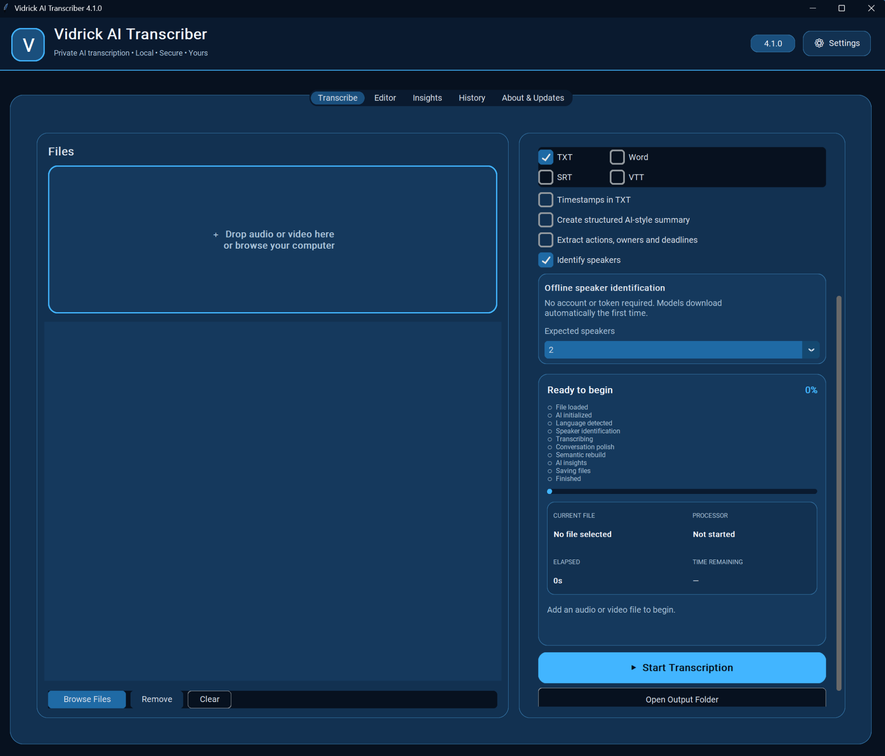
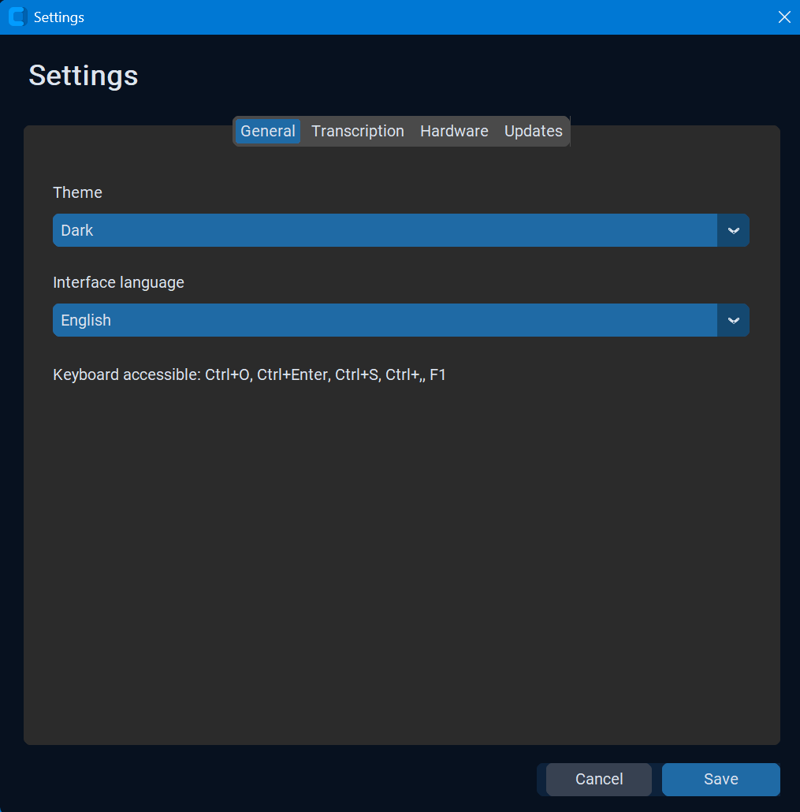
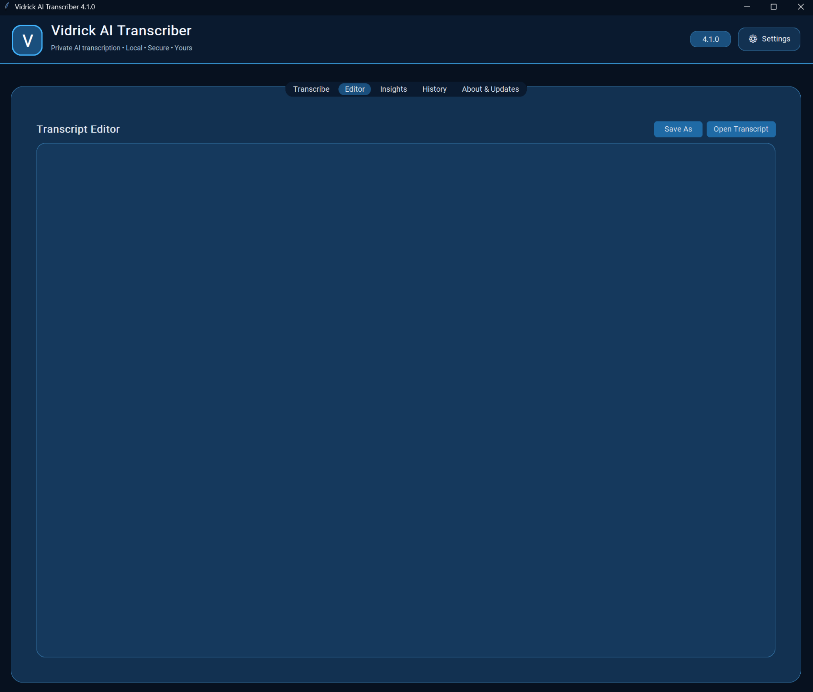
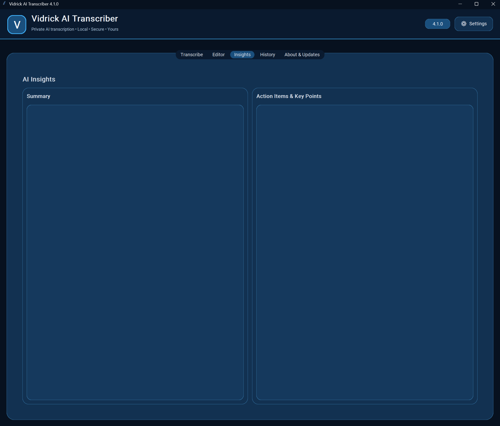
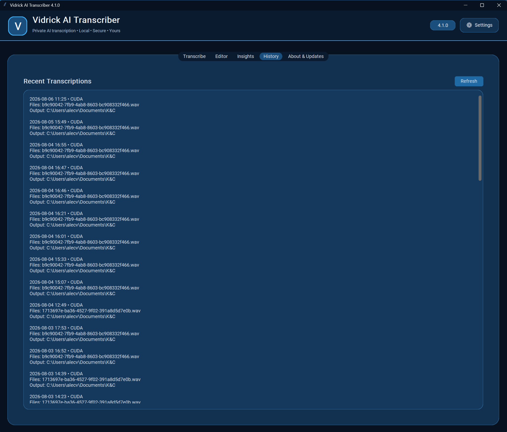
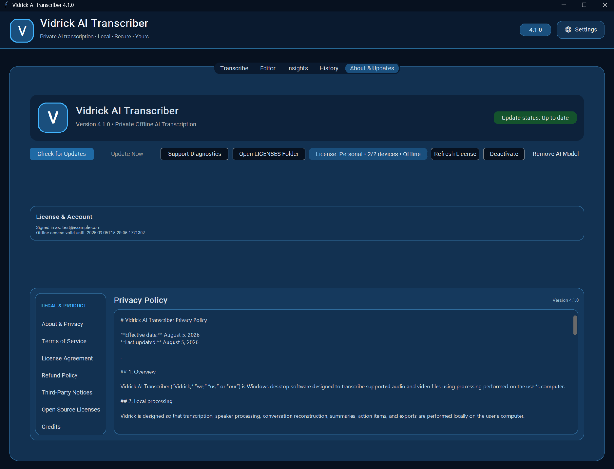

Private by design
Your recordings are processed locally on your own Windows computer.
Turn audio and video into clean, readable transcripts with offline speaker separation, context-aware conversation polish, and semantic reconstruction.

Choose your processor, language, output formats, and speaker count. Vidrick can run entirely offline and uses compatible NVIDIA hardware for faster transcription.
Choose appearance, transcription defaults, processor preferences, and update behavior from one organized settings window.

Open completed transcripts, make quick edits, and save the final version without switching to another program.

Vidrick includes space for structured summaries, key points, owners, and deadlines — all within the same private desktop workflow.

Review dates, processing hardware, source files, and output locations without signing into a cloud dashboard.

Check for releases, review account and license status, manage offline access, and read privacy and legal information from one place.

Your recordings are processed locally on your own Windows computer.
Offline diarization and conversation reconstruction keep speakers organized.
Compatible NVIDIA GPUs can dramatically reduce processing time.
Create TXT, DOCX, SRT, and VTT files from one workflow.
Speaker 1: Yeah... Well... I think— Speaker 1: we should probably... Speaker 2: Okay.
Speaker 1:
Yeah, I think we should probably move forward.
Speaker 2:
Okay.
Begin with a free trial, then choose the plan that fits your workflow.
For individuals who need private transcription without sending recordings to the cloud.
For professionals who transcribe conversations regularly and need commercial-use rights.
For teams and organizations that need deployment support and multi-user licensing.
Create your Vidrick account and get ready for private, offline AI transcription on Windows.